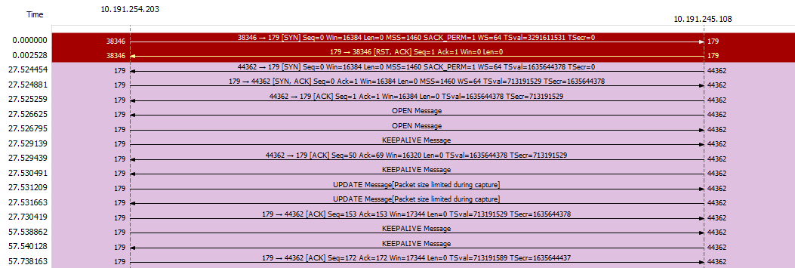
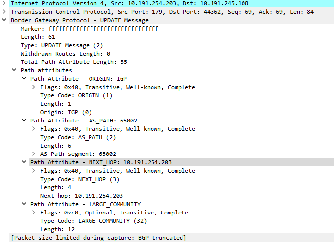

Border Gateway Protocol (BGP) and Kubernetes
Introduction
On this post I want to write a bit about Border Gateway Protocol, Calico and Kubernetes, in the examples we are going to see an use case with OpenBSD/openbgp and after Project Calico with BGP mode to illustrate how this protocol can be used in the CNI to provide automatic routing across nodes.
After reading leave comments in the end and share the post. Nuff said.
BGP protocol
The RFC of BGP-4 is pretty clear in the abstract about the primary function of BGP being is to exchange network reachability information with other BGP systems. This network reachability information includes information on the list of Autonomous Systems (ASes) that reachability information traverses.
This information is sufficient for constructing a graph of AS connectivity for this reachability from which routing loops may be pruned, and, at the AS level, some policy decisions may be enforced.
BGP-4 provides a set of mechanisms for supporting Classless Inter-Domain Routing (CIDR). These mechanisms include support for advertising a set of destinations as an IP prefix, and eliminating the concept of network “class” within BGP. BGP-4 also introduces mechanisms that allow aggregation of routes, including aggregation of AS paths.
Meaning we can create automated routing across routers that can communicate with each other.
From the Wikipedia: An autonomous system (AS) is a collection of connected Internet Protocol routing prefixes under the control of one or more network operators on behalf of a single administrative entity or domain, that presents a common and clearly defined routing policy to the Internet.
The reason for this separation is the lack of scalability and routing policies if one entity only was created, for this reason routers inside an AS can have their own protocol specifications. IGP route between routes, EGP route between AS and BGP route among/between AS. ASN (numbers) are unique identifiers with 1-64511 being public ones.
There is no requirement for networks running BGP to have an IGP as well. Simple multihomed networks with two routers run just fine without an IGP: a few static routes are all that’s needed, because all traffic goes to a directly connected network, to the rest of the world, or to the other router. For larger networks, IGPs are a fact of life. Your only choice for an EGP is BGP-4, but IGPs let you use any interior routing protocol you desire. On a Cisco router, you have the following choices: RIP, IGRP, EIGRP, OSPF, and IS-IS.
About the procotol and accordingly with this book BGP uses TCP on port 179 for communication between neighbors. This is unusual: all other routing protocols either run directly on top of IP or use UDP.
This makes it possible to send broadcasts or multicasts to discover neighboring routers. When BGP neighbors establish a TCP session, they start exchanging BGP information in the form of “messages.”
These messages can have a few formats, that we will analyze better later:
- Open - After a TCP connection is established, the first message sent by each side is an OPEN message, if the Open message is acceptable, a KEEPALICE message confirming the OPEn is sent back.
- Update - Are used to transfer routing information between BGP peers. The information in the UPDATE message can be used to construct a graph that describes the relationships of the various Autonomous Systems.
- Keepalive - BGP does not use any TCP-based, keep-alive mechanism to determine if peers are reachable. Instead, KEEPALIVE messages are exchanged between peers often enough not to cause the Hold Timer to expire.
- Notification - A message is sent when an error condition is detected. The BGP connection is closed immediately after it is sent.
Besides that BGP has Finite State Machine with Idle, Connect, Active, OpenSent, OpenConfirm, Established.
OpenBGP and OpenBSD
Enough theory, bootup your install71.iso, for this lab you will need 2 machines that can at least ping each other.

| Machine | IP address | ASN |
|---|---|---|
| r1 | 10.191.254.108/16 | 65001 |
| r2 | 10.191.254.203/16 | 65002 |
The following /etc/bgpd.conf files from both OpenBSD routers
# r1
ASN="65001"
AS $ASN
router-id 10.191.245.108
prefix-set networks {
172.15.0.0/16
}
include "/var/db/rpki-client/openbgpd"
network prefix-set networks set large-community $ASN:1:1
group "upstreams" {
neighbor 10.191.254.203 {
remote-as 65002
descr "r2"
}
}
# r2
ASN="65002"
AS $ASN
router-id 10.191.254.203
prefix-set networks {
prefix-set network {
172.16.0.0/16
}
network prefix-set network set large-community $ASN:1:1
group "upstreams" {
neighbor 10.191.245.108 {
remote-as 65001
descr "r1"
}
}
Respectively we have as outside networks from the AS, 172.15.0.0/16 connected on R1 and 172.16.0.0/16 on R2, as you can see there’s the need to create groups and add neighbors, the protocol won’t multicast to find the peers.
Start the services /etc/rc.d/bgpd start and check the routes added, you need to add the route to the outside network
on each end. 10.191.249.1 and 10.191.249.2 are the gateways for each network.
r1> route add -inet 172.15.0.0/16 10.191.249.1
add net 172.15.0.0/16: gateway 10.191.249.1
r1> route -n show
Routing tables
Internet:
Destination Gateway Flags Refs Use Mtu Prio Iface
default 10.191.255.254 UGS 6 18731 - 8 em0
...
172.16/16 10.191.254.203 UG 0 0 - 48 em0
172.15/16 10.191.249.1 UG 0 0 - 48 em0
r2> route add -inet 172.16.0.0/16 10.191.249.2
add net 172.16.0.0/16: gateway 10.191.249.2
r2> route -n show
Routing tables
Destination Gateway Flags Refs Use Mtu Prio Iface
default 10.191.255.254 UGS 5 125326 - 8 em0
...
172.15/16 10.191.245.108 UG 0 0 - 48 em0
172.16/16 10.191.249.2 UGS 0 0 - 8 em0
r2> bgpctl show rib neighbor "r1" in
flags: * = Valid, > = Selected, I = via IBGP, A = Announced,
S = Stale, E = Error
origin validation state: N = not-found, V = valid, ! = invalid
origin: i = IGP, e = EGP, ? = Incomplete
flags ovs destination gateway lpref med aspath origin
* N 172.15.0.0/16 10.191.245.108 100 0 65001 i
That’s great both hosts added the routes, and you can see the messages been exchanged from this wireshark diagram, basically r2 started a connection and the daemon on r1 wasn’t running (that’s why it receive a RST/ACK), a few seconds later r1 started the daemon after fixing the configuration file, the first PSH is an Open message from r1, the message is acked and a keep alive was received.

The UPDATES are for route exchange, you can see the second UPDATE decoded here, r2 exchange with AS_PATH attribute 65002, NEXT_HOP being it’s IP. The RFC has more details of these properties:

Calico CNI and BGP mode
What about Kubernetes? Where does BGP is used? Well, it’s possible to configure BGP (Border Gateway Protocol) between Calico nodes or peering with network infrastructure to distribute routing information. When BGP is enabled, Calico’s default behavior is to create a full-mesh of internal BGP (iBGP) connections where each node peers with each other.
This allows Calico to operate over any L2 network, whether public cloud or private cloud, or, if IPIP is configured, to operate as an overlay over any network that does not block IPIP traffic. Calico does not use BGP for VXLAN overlays And for this propose no encapsulation will be used.
Too much? not yet… Josh explains on this video the modes and encapsulation of Calico. Some other good resources
includes, the entire series Understanding Kubernetes Networking is worth. More than 4 hours of free content in the
Internet move your lazy ass!
How the routing normally works for non BGP CNIs? Nodes have a podCIDR and the CNI can use github.com/vishvananda/netlink
libraries like this to manage the routing based on these CRDs fields. What is normally achieved in an agent running on
a daemonset.
apiVersion: v1
kind: Node
spec:
podCIDR: 100.10.1.0/24
podCIDRs:
- 100.10.1.0/24
A lot of other projects allow you to do these connections including FRRouting and BIRD, being the second used by Calico in the agent. Make sure you are configuring bgp and BIRD connection, in the example we are using IP in IP as an encapsulation.
`curl https://projectcalico.docs.tigera.io/manifests/calico.yaml -O`
# Use Kubernetes API as the backing datastore.
- name: DATASTORE_TYPE
value: "kubernetes"
# Choose the backend to use.
- name: CALICO_NETWORKING_BACKEND
value: "bird"
# Cluster type to identify the deployment type
- name: CLUSTER_TYPE
value: "k8s,bgp"
# Enable IPIP
- name: CALICO_IPV4POOL_IPIP
value: "Always"
# Enable or Disable VXLAN on the default IP pool.
- name: CALICO_IPV4POOL_VXLAN
value: "Never"
Debugging routes
On this new scenario we have 3 nodes, in the IPPool range of 10.244.0.0/16 split as follow:
❯ calicoctl ipam check
Found 4 IPAM blocks.
IPAM block 10.244.110.128/26 affinity=host:kind-worker2:
IPAM block 10.244.162.128/26 affinity=host:kind-worker:
IPAM block 10.244.195.192/26 affinity=host:kind-worker3:
IPAM block 10.244.82.0/26 affinity=host:kind-control-plane:
IPAM blocks record 8 allocations.
Loading all IPAM pools...
10.244.0.0/16
Found 1 active IP pools.
❯ calicoctl ipam show
+----------+---------------+-----------+------------+--------------+
| GROUPING | CIDR | IPS TOTAL | IPS IN USE | IPS FREE |
+----------+---------------+-----------+------------+--------------+
| IP Pool | 10.244.0.0/16 | 65536 | 8 (0%) | 65528 (100%) |
+----------+---------------+-----------+------------+--------------+
❯ kubectl get nodes -o wide
NAME STATUS ROLES AGE VERSION INTERNAL-IP EXTERNAL-IP OS-IMAGE KERNEL-VERSION CONTAINER-RUNTIME
kind-control-plane Ready control-plane 8m15s v1.24.0 172.18.0.5 <none> Ubuntu 21.10 5.10.102.1-microsoft-standard-WSL2 containerd://1.6.4
kind-worker Ready <none> 7m41s v1.24.0 172.18.0.3 <none> Ubuntu 21.10 5.10.102.1-microsoft-standard-WSL2 containerd://1.6.4
kind-worker2 Ready <none> 7m41s v1.24.0 172.18.0.2 <none> Ubuntu 21.10 5.10.102.1-microsoft-standard-WSL2 containerd://1.6.4
kind-worker3 Ready <none> 7m41s v1.24.0 172.18.0.4 <none> Ubuntu 21.10 5.10.102.1-microsoft-standard-WSL2 containerd://1.6.4
If we get the status of the node kind-worker 172.18.0.3, we can see the neighbors, listing the routes
we can get 10.244.82.0/16 via 172.18.0.5, that’s the controlplane host as we see the tunl0 interface is used
meaning the traffic is being encapsulated, when l2bridge is active it would go via eth0 in the physical
interface. The same is true for the other ranges.
root@kind-worker:/# calicoctl node status
Calico process is running.
IPv4 BGP status
+--------------+-------------------+-------+----------+-------------+
| PEER ADDRESS | PEER TYPE | STATE | SINCE | INFO |
+--------------+-------------------+-------+----------+-------------+
| 172.18.0.5 | node-to-node mesh | up | 23:52:12 | Established |
| 172.18.0.2 | node-to-node mesh | up | 23:52:12 | Established |
| 172.18.0.4 | node-to-node mesh | up | 23:52:11 | Established |
+--------------+-------------------+-------+----------+-------------+
IPv6 BGP status
No IPv6 peers found.
root@kind-worker:/# ip route
default via 172.18.0.1 dev eth0
10.244.82.0/26 via 172.18.0.5 dev tunl0 proto bird onlink
10.244.110.128/26 via 172.18.0.2 dev tunl0 proto bird onlink
blackhole 10.244.162.128/26 proto bird
10.244.195.192/26 via 172.18.0.4 dev tunl0 proto bird onlink
172.18.0.0/16 dev eth0 proto kernel scope link src 172.18.0.3
Running a pod on kind-worker3 on 10.244.195.194, what is in (195.192) range and is given by the IPAM plugin,
will redirect the traffic to the node as the next hop, remember this is a container running in the node
(on another IP in the network namespace), as soon the node receives the packet it forward to the Pod
via caliba2160f804b interface.
> kubectl get pods -o wide
default nginx3 1/1 Running 0 11s 10.244.195.194 kind-worker3 <none> <none>
root@kind-worker3:/# ip route
10.244.82.0/26 via 172.18.0.5 dev tunl0 proto bird onlink
10.244.110.128/26 via 172.18.0.2 dev tunl0 proto bird onlink
10.244.162.128/26 via 172.18.0.3 dev tunl0 proto bird onlink
10.244.195.194 dev `caliba2160f804b` scope link
If we check the agent BIRDipv4 configuration on cat /etc/calico/confd/config/bird.cfg, we can find the peers
router id 172.18.0.3;
# For peer /host/kind-control-plane/ip_addr_v4
protocol bgp Mesh_172_18_0_5 from bgp_template {
neighbor 172.18.0.5 as 64512;
source address 172.18.0.3; # The local address we use for the TCP connection
passive on; # Mesh is unidirectional, peer will connect to us.
}
# For peer /host/kind-worker/ip_addr_v4
# Skipping ourselves (172.18.0.3)
# For peer /host/kind-worker2/ip_addr_v4
protocol bgp Mesh_172_18_0_2 from bgp_template {
neighbor 172.18.0.2 as 64512;
source address 172.18.0.3; # The local address we use for the TCP connection
}
# For peer /host/kind-worker3/ip_addr_v4
protocol bgp Mesh_172_18_0_4 from bgp_template {
neighbor 172.18.0.4 as 64512;
source address 172.18.0.3; # The local address we use for the TCP connection
passive on; # Mesh is unidirectional, peer will connect to us.
}
One last try, listening tshark from the kind-worker3 we will delete the calico-node agent in the control-plane
node 172.18.0.5. A connection is kept across all nodes with the bird daemon on this port, and as soon the connection is closed
a new retry happens with the protocol OPEN and UPDATE messages.
root@kind-worker3:/# lsof -i :179
COMMAND PID USER FD TYPE DEVICE SIZE/OFF NODE NAME
bird 12294 root 7u IPv4 351376 0t0 TCP *:bgp (LISTEN)
bird 12294 root 8u IPv4 366653 0t0 TCP kind-worker3:bgp->kind-control-plane.kind:58325 (ESTABLISHED)
bird 12294 root 9u IPv4 351408 0t0 TCP kind-worker3:52953->kind-worker.kind:bgp (ESTABLISHED)
bird 12294 root 10u IPv4 351409 0t0 TCP kind-worker3:35655->kind-worker2.kind:bgp (ESTABLISHED)
root@kind-worker3:/# tshark -i any "port 179"
...
1 0.000000000 172.18.0.5 ? 172.18.0.4 TCP 68 58325 ? 179 [FIN, ACK] Seq=1 Ack=1 Win=502 Len=0 TSval=820590145 TSecr=888352057
2 0.000126600 172.18.0.4 ? 172.18.0.5 TCP 68 179 ? 58325 [FIN, ACK] Seq=1 Ack=2 Win=510 Len=0 TSval=888379111 TSecr=820590145
3 0.000155500 172.18.0.5 ? 172.18.0.4 TCP 68 58325 ? 179 [ACK] Seq=2 Ack=2 Win=502 Len=0 TSval=820590145 TSecr=888379111
4 7.368669600 172.18.0.5 ? 172.18.0.4 TCP 76 48333 ? 179 [SYN] Seq=0 Win=64240 Len=0 MSS=1460 SACK_PERM=1 TSval=820597513 TSecr=0 WS=128
5 7.368690500 172.18.0.4 ? 172.18.0.5 TCP 76 179 ? 48333 [SYN, ACK] Seq=0 Ack=1 Win=65160 Len=0 MSS=1460 SACK_PERM=1 TSval=888386479 TSecr=820597513 WS=128
6 7.368718300 172.18.0.5 ? 172.18.0.4 TCP 68 48333 ? 179 [ACK] Seq=1 Ack=1 Win=64256 Len=0 TSval=820597513 TSecr=888386479
7 7.368810900 172.18.0.4 ? 172.18.0.5 BGP 131 OPEN Message
8 7.368830600 172.18.0.5 ? 172.18.0.4 TCP 68 48333 ? 179 [ACK] Seq=1 Ack=64 Win=64256 Len=0 TSval=820597513 TSecr=888386479
9 7.368979900 172.18.0.5 ? 172.18.0.4 BGP 131 OPEN Message
10 7.368987300 172.18.0.4 ? 172.18.0.5 TCP 68 179 ? 48333 [ACK] Seq=64 Ack=64 Win=65280 Len=0 TSval=888386480 TSecr=820597514
11 7.369079500 172.18.0.4 ? 172.18.0.5 BGP 87 KEEPALIVE Message
12 7.369096000 172.18.0.5 ? 172.18.0.4 TCP 68 48333 ? 179 [ACK] Seq=64 Ack=83 Win=64256 Len=0 TSval=820597514 TSecr=888386480
13 7.369186800 172.18.0.5 ? 172.18.0.4 BGP 87 KEEPALIVE Message
14 7.369193000 172.18.0.4 ? 172.18.0.5 TCP 68 179 ? 48333 [ACK] Seq=83 Ack=83 Win=65280 Len=0 TSval=888386480 TSecr=820597514
15 7.369343300 172.18.0.4 ? 172.18.0.5 BGP 121 UPDATE Message
16 7.369366400 172.18.0.5 ? 172.18.0.4 TCP 68 48333 ? 179 [ACK] Seq=83 Ack=136 Win=64256 Len=0 TSval=820597514 TSecr=888386480
17 7.369381600 172.18.0.4 ? 172.18.0.5 BGP 91 UPDATE Message
18 7.369393900 172.18.0.5 ? 172.18.0.4 TCP 68 48333 ? 179 [ACK] Seq=83 Ack=159 Win=64256 Len=0 TSval=820597514 TSecr=888386480
19 8.370730900 172.18.0.5 ? 172.18.0.4 BGP 121 UPDATE Message
20 8.370766100 172.18.0.4 ? 172.18.0.5 TCP 68 179 ? 48333 [ACK] Seq=159 Ack=136 Win=65280 Len=0 TSval=888387481 TSecr=820598515
21 8.370781900 172.18.0.5 ? 172.18.0.4 BGP 91 UPDATE Message
22 8.370785500 172.18.0.4 ? 172.18.0.5 TCP 68 179 ? 48333 [ACK] Seq=159 Ack=159 Win=65280 Len=0 TSval=888387481 TSecr=820598515
23 30.522048400 172.18.0.2 ? 172.18.0.4 BGP 87 KEEPALIVE Message
24 30.522091300 172.18.0.4 ? 172.18.0.2 TCP 68 35655 ? 179 [ACK] Seq=1 Ack=20 Win=502 Len=0 TSval=2977307332 TSecr=3831078776
Conclusion
And why should I care? Routing is fun and the next time another social media site is shutdown by route withdraws you can at least understand the post-mortem. Go get it!